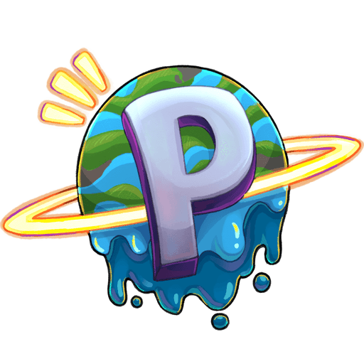

🌐 General
›
🏠 Bienvenida

🌌
Bienvenido a la Wiki de PlanetMC
Tu punto de inicio para descubrir todo lo que ofrece el servidor.
Aprende, explora y conviértete en un verdadero experto dentro de PlanetMC.
Nos alegra tenerte aquí. En esta wiki encontrarás toda la información necesaria
para comenzar tu aventura: desde guías básicas, hasta sistemas más avanzados,
comandos y mecánicas únicas del servidor.
PlanetMC es una comunidad enfocada en ofrecer una experiencia survival divertida,
estable y en constante evolución, donde cada jugador puede crecer, construir
y formar parte de algo más grande.
🚀 ¿Qué encontrarás aquí?
- Guías paso a paso para comenzar desde cero.
- Explicación de sistemas como economía y protecciones.
- Listado de comandos importantes.
- Consejos y trucos para mejorar tu experiencia.
🧭 ¿Cómo empezar?
- Lee las normas del servidor para evitar sanciones.
- Ingresa al servidor usando la IP.
- Explora el spawn y familiarízate con el entorno.
- Consulta la sección de Primeros Pasos.
- ¡Empieza tu aventura y construye tu historia!
💡
Consejo: Revisa siempre la wiki antes de preguntar. Muchas respuestas ya están aquí.
⚠️
Importante: El desconocimiento de las normas no evita sanciones.
📊 Información del servidor
IP Java
play.planetmc.net 📋
Versión
1.21.x
Modo
Survival
⭐ ¿Por qué jugar en PlanetMC?
🌍
Comunidad activa
Jugadores constantes y ambiente amigable.
⚙️
Sistemas únicos
Economía, protecciones y más.
🚀
Actualizaciones
Contenido nuevo constantemente.
🎉
Eventos
Participa en eventos y gana recompensas.
🌟 Tu aventura comienza aquí
Cada jugador escribe su propia historia en PlanetMC.
Este es solo el comienzo… lo que hagas a partir de ahora depende de ti.
🌟
Prepárate: explora, construye, haz amigos y diviértete.